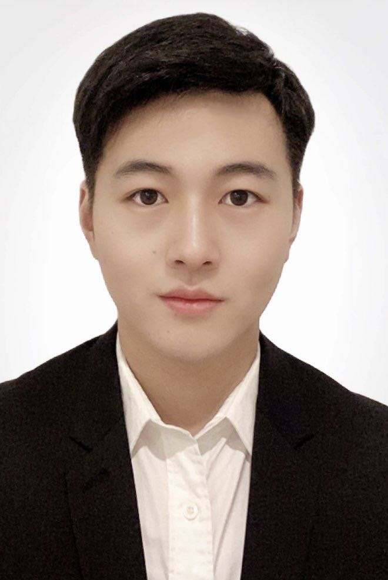

Xu Zhang

Summary
Exemplifies skills in: Project Research, Coordination and Communication
An entry-level engineer holding a Master's in Electrical Engineering backed by a 1-year practical research experience
accentuated by success in boosting sensitivity of detection systems for gravitational wave and developing cutting edge
signal processing algorithms. Has 8-month experience working as a FPGA engineer in HUAWEI company after
graduation and excels at developing great rapport with people and solving problems. Has a good understanding and
interpretation of legislation within the electrical field. Offers intermediate skills in Engineering design tools and software
(Altium Designer, Quartus II, Modelsim); programming languages (C/C++, Python, Java, Verilog etc.); statistical
analysis software (Matlab, Minitab). Seeks a position at an engineering company, to apply gained academic
knowledge and communication skills; and advance a career as a Graduate Engineer.
Education
Master of Electrical Engineering (with Distinction) (WAM = 80.158) Dec 2019
THE UNIVERSITY OF MELBOURNE, Parkville, VIC
Core Coursework:
- Control Systems, Signal Processing, Electronic Circuit Design, etc.
Projects Completed:
- Built a game console from drawing schematic diagram and PCB, and finally uploaded the game code to run it
- Completed a calculator function using Verilog language in Quartus II
- Developed a Temperature Controller after building many circuits and a feedback system using temperature sensor
Awards/Accolades:
- Merit Award for the outstanding achievement in master’s project on gravitational wave detection in the field of Electrical and Electronic Engineering.
Bachelor's in Measuring & Control Technology & Instruments (WAM = 83.4) Jul 2016
HARBIN INSTITUTE OF TECHNOLOGY, China
Core Coursework:
- Sensor Technology & Application, Mechanics Basis, Instrument Design Theory, etc.
Awards/Accolades:
- Multiple Learning Merit Scholarships; 2nd-Class Honours of American Mathematical Contest in Modelling (MCM); Excellence Award for Graduation Project Paper.
Research Project Summary
ARC Centre of Excellence for Gravitational Wave Discovery (OzGrav) Dec 2018 - Nov 2019
Team Member - Advances in Signal Processing & Control for Gravitational Wave Detection
Research Description:
- Focused on boosting sensitivity of the detection systems and developing more advanced signal processing algorithms.
- Analysing the coupling characteristics of the isolator system in a modelling software ANSYS and 3 different closed control methods are investigated to suppress the seismic noise and stabilize the detector.
Key Activities:
- Initially completed the system identification of the isolator system with teammates
- Modelled the isolator system in MATLAB as requested by the Professors
- Used 3 different closed control methods (PID, LQG and H-infinity loopshaping) to control the isolator system and reduce the disturbance of seismic noise whilst stabilizing the detector.
Work Experience
Huawei Technologies Co., Ltd. (Shanghai, China) Jan - Aug 2021
FPGA and IC Verification Engineer
- Familiar with the whole process of FPGA project and the use of different tools at different stages like Vivado/Quartus, QuestaSim/Modelsim
- Learn SystemVerilog and UVM methodology for IC verification project, frequently use Linux, GVIM and SVN for daily work
- Participate in the big project of integrated verification of the SOC chip for 5G base station, and successfully complete test point decomposition, test case planning/writing and coverage collection
- Experience in the whole process of integrated verification of SOC chip, have a good understanding of the input/output components and their quality requirements at each stage
- Be selected as the excellent new employee
Additional Information
- Languages: English (Fluent); Mandarin (Native)
- Visa Status: Permanent Resident
- My Hobbies
- Contact Me